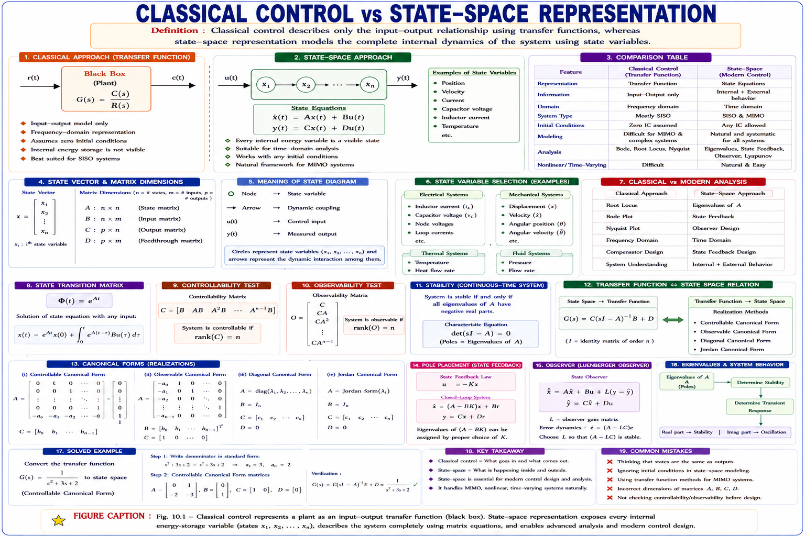
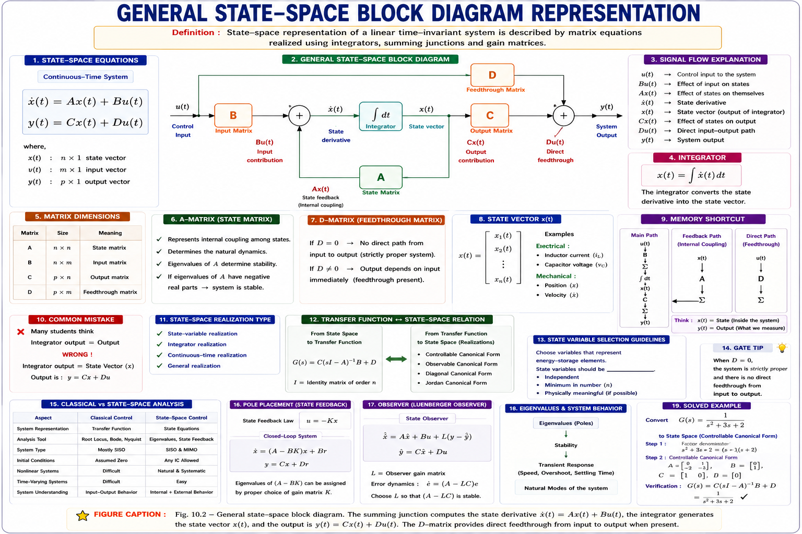

State variables, state space representation, canonical forms, solution of state equations, the state transition matrix, controllability and observability — complete GATE, IES, and PSU exam coverage with full derivations, solved examples, and inline diagrams.
Every transfer function you have used so far — for a DC motor, an RC filter, or a feedback loop — describes only the relationship between one input and one output. It says nothing about what is happening inside the system: the capacitor voltages, the inductor currents, the shaft velocity buried inside a gearbox. Classical control theory treats the system as a black box. State variable analysis opens that box.
A transfer function is valid only for linear, time-invariant, single-input single-output systems, and only under zero initial conditions. Real plants are multi-input multi-output (MIMO), often have stored energy at t = 0, and modern controllers (Kalman filters, LQR, state feedback) need direct access to internal variables. The state variable — or state space — approach was built exactly to remove these restrictions.

The state of a dynamic system is the smallest set of variables (called state variables) such that knowledge of these variables at t = t₀, together with the knowledge of the input for t ≥ t₀, completely determines the behaviour of the system for any time t ≥ t₀.
In physical terms, state variables are almost always the variables associated with energy storage: capacitor voltages and inductor currents in an electrical network, or position and velocity in a mechanical system. The number of independent energy-storage elements fixes the order of the system — and therefore the number of state variables required.
What if two different physical systems have the same transfer function? They can still have completely different state models, because a transfer function only captures the controllable-and-observable part of the dynamics. This is exactly why state variable analysis, and the ideas of controllability and observability covered later in this chapter, matter so much.
For a linear, time-invariant system with n state variables, m inputs, and p outputs, the entire dynamic behaviour is captured by two matrix equations — the state equation and the output equation.

Take a series RLC circuit driven by voltage source v(t), with capacitor voltage v_C and inductor current i_L chosen as state variables (they store energy, so they qualify). Applying KVL and the capacitor current relation gives:
Writing this in matrix form with x = [v_C i_L]ᵀ and output y = i_L:
The state model is not unique — any non-singular linear transformation z = Tx gives an equally valid state model with different A, B, C matrices but the same input–output transfer function. GATE frequently tests this: two "different-looking" state models can represent the identical physical system.
Because the state model is not unique, certain "standard shapes" — canonical forms — are used so that state models can be written directly from a transfer function by inspection. The three most important for GATE/IES are the phase-variable (controllable canonical) form, the observable canonical form, and the diagonal (Jordan) canonical form.
For a transfer function
the state variables are chosen as the output and its successive derivatives (x₁ = y, x₂ = ẋ₁, …). The resulting matrices always have this recognisable "companion" pattern:
Two starting points are tested repeatedly in GATE/IES: converting a given transfer function into state-space form, and deriving the state model directly from a physical (mechanical, electrical, or electromechanical) system using its governing differential equations.
For a mass m, damping b, spring stiffness k, driven by force f(t), with position x and velocity ẋ as states:
Notice the structural resemblance to the RLC example in section 10.2 — mass ↔ inductance, damping ↔ resistance, and spring stiffness ↔ inverse capacitance. This electrical–mechanical analogy is a favourite GATE conceptual trap.
Mass m ↔ Inductance L, Damping b ↔ Resistance R, Stiffness k ↔ 1/C, Force f(t) ↔ Voltage v(t), Velocity ẋ ↔ Current i. The state equations of the two systems have identical structure once these substitutions are made.
Just as a scalar differential equation ẋ = ax has solution x(t) = e^{at}x(0), the vector state equation ẋ = Ax + Bu has an analogous matrix-exponential solution.
With u(t) = 0, the equation reduces to ẋ = Ax. By direct analogy with the scalar case:
where e^{At} is a matrix exponential defined by the infinite series
With a non-zero input u(t), multiplying both sides by the integrating factor e^{-At} and integrating from 0 to t gives the complete solution:
The output follows immediately by substituting into y = Cx + Du:
Taking the Laplace transform of the state equation, sX(s) − x(0) = AX(s) + BU(s), and solving for X(s):
Comparing the time-domain and Laplace-domain solutions term by term shows e^{At} = L⁻¹[(sI − A)⁻¹]. This single identity is the fastest practical route to computing the state transition matrix, and is the most heavily tested result in this chapter.
The matrix ϕ(t) = e^{At} is called the state transition matrix because it maps — "transitions" — the state from one time instant to another: ϕ(t) drives the initial state x(0) forward to x(t) with no external input.
| Property | Statement | Interpretation |
|---|---|---|
| Initial value | \(\phi(0) = I\) | No time has passed — state is unchanged |
| Inverse | \(\phi^{-1}(t) = \phi(-t)\) | The transition is reversible in time |
| Semi-group | \(\phi(t_1+t_2) = \phi(t_1)\phi(t_2)\) | Splitting the interval gives the same result |
| Transitivity | \(\phi(t_2-t_0)=\phi(t_2-t_1)\phi(t_1-t_0)\) | Transition through an intermediate time |
| Derivative | \(\dot{\phi}(t) = A\phi(t)\) | \(\phi(t)\) itself satisfies the state equation |
| Power rule | \([\phi(t)]^k = \phi(kt)\) | Repeated application accumulates time |
The reverse conversion — from state-space back to a transfer function — is obtained by taking the Laplace transform of both state and output equations with zero initial conditions and eliminating X(s).
The denominator of G(s) obtained this way is always |sI − A| = 0 — the characteristic equation of the system. Its roots are the eigenvalues of A, and they are exactly the poles of the transfer function, regardless of which canonical form or state variables were chosen.
Because (sI − A)⁻¹ = adj(sI − A)/|sI − A|, cancellation between numerator and denominator can occur if a factor of |sI − A| exactly cancels with a factor from C·adj(sI − A)·B. When this happens the transfer function has lower order than the state model — a direct symptom of the system being either uncontrollable or unobservable in that mode, the subject of the next two sections.
Controllability asks a very practical design question: can the input actually influence every state of the system? If some internal energy variable can never be affected by u(t), no controller design — however clever — can regulate that variable.
A system is said to be completely state controllable if it is possible to transfer the system from any initial state x(t₀) to any desired final state x(t_f) in a finite time interval, using an unconstrained control input u(t).
Form the n × nm controllability matrix:
If A can be diagonalised (distinct eigenvalues) using x = Tz, the transformed state equation becomes ż = Λz + B̂u, where Λ is diagonal and B̂ = T⁻¹B.
What happens if two eigenvalues of A are equal and their corresponding B̂ rows are proportional? The mode becomes uncontrollable even though B̂ itself has no zero row — a classic GATE trap for repeated-eigenvalue systems, which is why the general Kalman rank test is the safer method whenever eigenvalues repeat.
Observability is the mirror-image question to controllability: can the internal states be deduced purely from watching the output? This matters whenever a state cannot be measured directly (e.g. rotor flux inside a motor) and must instead be reconstructed by an observer or Kalman filter.
A system is said to be completely observable if every initial state x(t₀) can be uniquely determined from observation of the output y(t) over a finite time interval, given knowledge of the input u(t) over that same interval.
Form the np × n observability matrix:
The pair (A, B) is controllable if and only if the pair (Aᵀ, Bᵀ) is observable, replacing B with Cᵀ. Formally: (A, C) is observable ⟺ (Aᵀ, Cᵀ) is controllable. This lets every controllability result be reused directly for observability by taking transposes — a favourite shortcut in GATE-level derivations.
| Aspect | Controllability | Observability |
|---|---|---|
| Question | Can input drive every state? | Can output reveal every state? |
| Matrix | \(Q_c = [\begin{array}{llll} B & AB & \dots & A^{n-1}B \end{array}]\) | \(Q_o = [C; CA; \dots ; CA^{n-1}]\) |
| Condition | \(\text{rank}(Q_c) = n\) | \(\text{rank}(Q_o) = n\) |
| Design use | Pole placement / state feedback | State observer / Kalman filter |
| Diagonal-form rule | No row of \(\hat{B}\) all-zero | No column of \(\hat{C}\) all-zero |
In the phase-variable A matrix the last row is −aₙ, −aₙ₋₁, …, −a₁ (in that order, most negative-index coefficient first) — students very commonly reverse this order or drop the negative sign, producing an unstable-looking A even when the true system is stable.
For observability, students sometimes build Qo using powers of Aᵀ instead of stacking C, CA, CA², … row-wise. Remember: Qc is built by horizontal concatenation (columns); Qo is built by vertical stacking (rows) — mixing the two conventions gives a wrong rank instantly.
Controllability starts from B (the input matrix) and multiplies forward by A: [B, AB, A²B, …] — input pushes state in. Observability starts from C (the output matrix) and multiplies forward by A, stacked vertically: [C; CA; CA²; …] — the output reads state out.
Given: n = 3, denominator coefficients a₁ = 6, a₂ = 11, a₃ = 6; numerator is a constant, so b₀ = 0, b₁ = 0, b₂ = 10.
Using the standard companion-form template directly:
The characteristic equation |sI − A| = s³ + 6s² + 11s + 6 = 0 exactly reproduces the original denominator — a quick self-check that the A matrix was written correctly. Factoring gives poles at s = −1, −2, −3.
Step 1 — Form (sI − A):
Step 2 — Determinant and inverse:
Step 3 — Partial fractions, term by term:
Step 4 — Inverse Laplace transform of every element:
At t = 0, every exponential becomes 1, and ϕ(0) reduces exactly to the identity matrix I — confirming the property ϕ(0) = I derived in section 10.6.
Controllability:
Since det(Qc) ≠ 0, rank(Qc) = 2 = n → the system is completely state controllable.
Observability:
Since det(Qo) ≠ 0, rank(Qo) = 2 = n → the system is completely observable.
Because the system is both fully controllable and fully observable, this state model is a minimal realisation — the transfer function C(sI − A)⁻¹B will have no pole-zero cancellation and its order will exactly equal n = 2.
A linear system has state matrix A = [[0, 1], [0, −2]] and input matrix B = [[0], [1]]. The system is:
Explanation: Qc = [B, AB] = [[0, 1], [1, −2]], det(Qc) = 0×(−2) − 1×1 = −1 ≠ 0, so rank = 2 = n → controllable. Observability, however, always depends on the C matrix, which is not given here — this is a favourite trap for testing whether students confuse the two properties.
If ϕ(t) is the state transition matrix of a linear time-invariant system, which of the following is always true?
Explanation: Since ϕ(t) = e^{At}, its inverse is e^{−At} = ϕ(−t) — a direct consequence of the matrix exponential's group property. ϕ(0) = I (not 0), and symmetry is not guaranteed unless A itself is symmetric.
Consider the following statements about a linear system (A, B, C):
1. Controllability
depends only on (A, B). | 2. Observability depends only on (A, C). |
3. (A, C) is observable if and only if (Aᵀ, Cᵀ) is controllable.
Explanation: All three statements are correct. Controllability is entirely a property of the (A, B) pair; observability is entirely a property of the (A, C) pair; and the duality principle formally links the two by transposition, exactly as covered in section 10.9.
For the transfer function G(s) = 5/(s³ + 2s² + 3s + 4), the last row of the phase-variable (controllable canonical) A matrix is:
Explanation: With a₁ = 2, a₂ = 3, a₃ = 4, the last row of the companion A matrix is [−a₃ −a₂ −a₁] = [−4 −3 −2] — coefficients appear in reverse index order with a negative sign, exactly the pattern flagged as a common mistake in section 10.10.
Series expansion, Inverse Laplace of (sI−A)⁻¹, Laplace method is fastest, Transpose links controllability ↔ observability. Recite this order whenever a question asks "how do you find ϕ(t)?" or "how are controllability and observability related?"
Have a question on state models, canonical forms, the state transition matrix, controllability, or observability? Type below or pick a suggestion.
Smallest set of variables that, with \(x(t_0)\) and \(u(t)\) for \(t \ge t_0\), fully determine behaviour for \(t \ge t_0\). Usually the energy-storage variables of the system. Number of states = system order.
\(\dot{x} = Ax + Bu\) (state equation), \(y = Cx + Du\) (output equation). \(A: n \times n\), \(B: n \times m\), \(C: p \times n\), \(D: p \times m\). Model is not unique — depends on choice of state variables.
Phase-variable (controllable) form built directly from TF coefficients. Observable form is its dual. Diagonal/Jordan form decouples states when eigenvalues are known.
\(\phi(t) = e^{At} = \mathcal{L}^{-1}[(sI-A)^{-1}]\). \(\phi(0) = I\), \(\phi^{-1}(t) = \phi(-t)\). Computed via series, Laplace method, or Cayley–Hamilton theorem.
\(Q_c = [B \quad AB \quad \dots \quad A^{n-1}B]\). Controllable \(\iff \text{rank}(Q_c) = n\). Gilbert's test: no row of \(\hat{B}\) (diagonal form) is all-zero.
\(Q_o = [C; CA; \dots ; CA^{n-1}]\). Observable \(\iff \text{rank}(Q_o) = n\). Dual of controllability via transpose: \((A,C)\) observable \(\iff (A^T,C^T)\) controllable.
All technical content is derived from the following standard textbooks and learning resources. All explanations, derivations, diagrams and examples are original to Aarova AI.